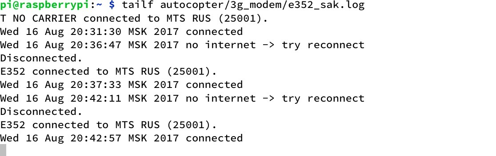

Programming, electronics, lifestyle
Данная статья восстановлена из заметки, которую я делал будучи сотрудником CopterExpress в 2017 году.
Многое, что следовало бы сделать я не сделал ввиду своей некомпетентности. Я понимаю, что в данном эксперименте нет ни одной числовой характеристики, хотя бы уровня сигнала. И, если бы я проводил данные эксперименты сейчас, то делал бы всё иначе. Однако, такими империческими методами, мне удалось получить полезную информацию и разобраться в сути происходящего.
На дроне был установлен сотовый модем, который был управляем с помощью небольшого скрипта на bash. Скрипт в цикле выполнял команду пинг, если она не проходила 3 раза, дергал API ручку модему, отвечающую за перезагрузку сети.
Также на дроне есть служба, которая раз в секунду отправляет heartbeat и фотографию с камеры на нашей информационный система (ИС).
Проблема: На земпле через модем был стабильный коннект в интернет (дрон стабильно отправлял фотографии), но при полете уже на 20 метрах коннект с ИС постоянно терялся и приводил с долгому переподключению или полной потере связи без переподключения == задержкам или отсуствию фотографий. Смена провайдера не решала проблемы.
Нужно попробовать оптимизировать скорость/алгоритм переподключения модема. Точно ли его нужно перезагружать всегда, когда пинг не проходит? Если пинг не проходит из-за того, что в воздухе просто плохо ловит связь, почему иногда помогает перезагрузка модема (сброс соединения)?
Я переписал исходный скрипт для управления модемом (был какой-то вендерный модем, к сожалению, сейчас не вспомню какой именно). Добавил расширеный отладочный вывод и тесты и обернул это все в системную службу. После тестов и полетов, я понял, что тут ничего не понятно, переподключение не происходит, связи все равно нет.
После чего я решил использовать связку umtskeeper + sakis3g, которую ранее уже использовал в дипломной работе.
Главная идея данного подхода: уход от управления через веб-интерфейс с закрытой кухней к управлению через скрипты, управляющие модемом с помощью AT-команд.
Для этих тестов я также стал использовать модем Huawei E352.
sakis3g – bash-скрипт управляющий модемом с помощью AT команд;umtskeeper – менеджер соединения, управляющий sakis3g и занимающийся ведением статистики.В теории данный подход должен был позволить быстрее переподключать модем и убрать неопределённость в плане управления.
Эта связка (софта + модема E352) в сравнении с предыдущим решением показали большую отказоустойчивость, так на высоте до 40 метров практически не было сбоев. Однако редко, а также при полетах на большую высоту 100-200 метров были долгие провалы связи (от одной до нескольких минут).
После чего я решил упростить тестирование. И посмотреть как будет вести себя моя служба и модем после потери связи.
Для тестирования я использовал выключенную закрытую микроволновку, с общей массой с модемом.
Неожиданно, оказалось, что возникают проблемы с переподключением из микроволновки. Канал связи я создаю до внесения в микроволновку и в микроволновке пинг есть. А если попытаться переподключить модем не вынимая из микроволновки, то ничего не выйдет (ошибка странная тем, что ppp-подключение создается, chap-аутентификация проводится, а затем модем говорит handup, и ничего не на этом всё).
Чтобы упростить испытания, я решил отказаться от использования umtskeeper, и написал службу для работы с sakis3g напрямую. В качестве индикатора наличия коннекта использовал старую идею с проверкой 3 пингов по 200 мс каждый. При таком управлении, после отправки на модем команды на переподключение (отключения и включения - последовательно) в нормальных условиях модем переподключается к интернету за 30-40 секунд (из них 30 секунд занимает и одна операция подключения).
Новая служба показала стабильную работу в микроволновке, видимо umtskeeper как-то иначе измерял наличие связи, что не работало при ограниченой полосе пропускания из микроволновки. После чего я решил провести тестовые полеты на относительно большой высоте.
Коптер остается онлайн (отсылает heartbeat в ИС) стабильно на высоте до 60 метров, после было принято решение полета на высоте 120-140 метров. На высоте 140 метров произошло длительное отключение дрона от нашей ИС, после чего мы снизили дрон до 100-120 метров, где ИС сообщала о цикличном отключении и затем восстановлении связи на короткое время.
После посадки аппарата и исследования логов, оказалось, что связь падала лишь раз примерно на 140 метрах (анализируя по времени). Все остальное время ping, как и подключение к интернету было.
Взлет был в 20:38, на примерно 140 метрах один раз упала связь (переподключение занимает около 30-40 секунд).

Я сделал предположение, что проблема заключается в том, что сотовое покрытие сильно направленно, и если мы говорим о канале с высокой пропускной способностью - 3G, 4G-сетях, то их покрытие остается на малой высоте. Затем модем переподключается к EDGE. И собственно ping остается, а ширина канала зачастую измеряется в Байт/сек.
Для проверки теории, я отключил отправку изображений с камеры коптера. Связь с информационным сервисом оставалась стабильной на высоте до 100 метров (heartbeats успешно приходили). На высоте в 120 метров произошло лишь одно переподключение. Также в течении полета на высоте около 100 метров происходили короткие (менее чем на секунду потери связи) с нашей ИС. Что подтверждало теорию о том, что модем не теряет сотовой связи (тк на переподключение нужно минимум 30 сек).
Huawei DS(DW)-4G83-170-CRC9 (разъём CRC-9)Huawei DS-4G7454W-TS9M3M (разъём TS-9)